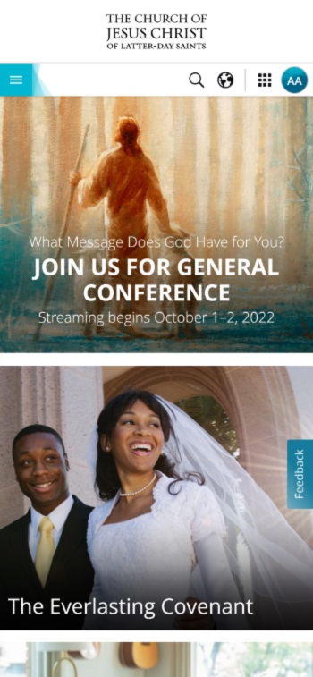

White Space and Clean Design
The Church of Jesus Christ of Latter-Day Saints
https://www.churchofjesuschrist.org/?lang=engThere is plenty of white space that seperates the images and their descriptions in a clear manner. You can tell which description belongs to which image.
Visual Hierarchy
The Church of Jesus Christ of Latter-Day Saints
https://www.churchofjesuschrist.org/?lang=eng The most important elements are displayed first and in proper order.
PARC: Alignment
The Church of Jesus Christ of Latter-Day Saints
https://www.churchofjesuschrist.org/?lang=engAll elements are aligned the same, giving the webpage a professional look with proper white space separating the elements.